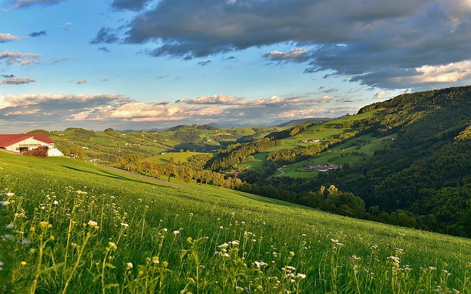
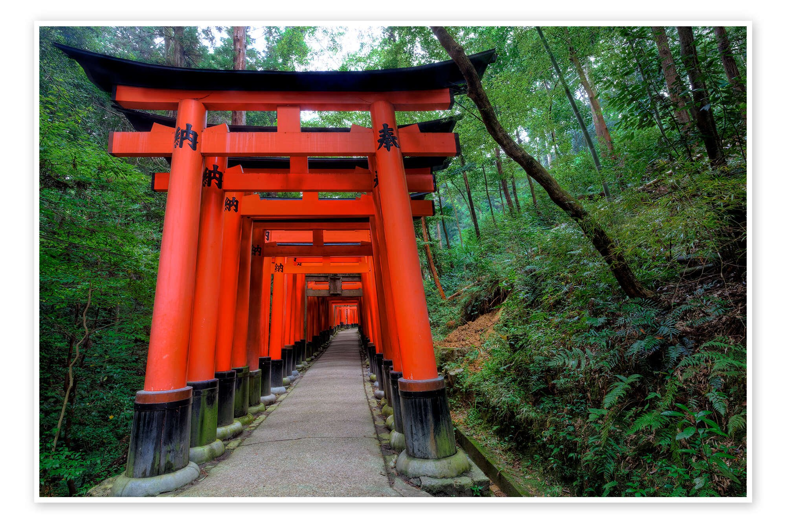

I'm a third-year computer science student at the University of Edinburgh, with a particular interest in the quiet, foundational parts of software — kernels, protocols, and the code that runs underneath everything else.
Recent work has taken me through Linux kernel modifications on v6.12, including custom syscalls and per-process memory ledgers, networking protocol implementations, and a System Design Project centred on building an autonomous bin collection robot called Curbie.
Away from the terminal I'm an Officer Cadet with the City of Edinburgh OTC, a Gold Duke of Edinburgh award holder, and an RYA Competent Crew — the outdoor life matters to me as much as the indoor one.

coursework across operating systems, computer networks, data science, and software engineering. recent work includes kernel development on Linux v6.12, networking protocol implementations, and a system design project focused on building an autonomous robot.
advanced highers: mathematics (a), physics (a), chemistry (b). highers: 5 a grades including maths, physics, chemistry, english, and business management.
A data science study of 6,270+ energy records from Appleton Tower, evaluating carbon reduction strategies for the University. Half-hourly electricity, heat, and solar generation data were cleaned, aligned, and merged into a single analysis pipeline so that trends could be compared across demand, supply, and seasonality rather than in isolation.
The most interesting result was also the least flattering: despite a 26kW solar installation, the panels offset only 4.49% of peak monthly demand. That turned the project from a simple reporting exercise into something closer to decision support, forcing me to think carefully about how to present technically accurate findings with real implications for sustainability planning and infrastructure investment.

A production-ready Spring Boot microservice for geospatial calculations, coordinate validation, and region-based queries. The service exposed endpoints for distance calculations, proximity checks, next-position prediction, and region inclusion, with health monitoring provided through Spring Actuator and a test suite built around TestRestTemplate, JUnit, and AssertJ.
What I enjoyed most about this project was the balance between correctness and engineering discipline. It was not just about getting the maths right; it was also about handling malformed input cleanly, designing responses that were predictable under edge cases, and writing enough integration tests to trust the service when deployed. The final result achieved 85%+ coverage and felt like one of the first projects where the implementation, validation, and developer experience all mattered equally.
A physics simulation exploring the motion of interacting bodies under gravity, built around three numerical integration algorithms and O(n²) force calculations. The codebase used an object-oriented structure to manage bodies, state vectors, and acceleration histories, while Matplotlib animation and frame-skipping kept the simulation responsive enough to inspect visually.
This project was valuable because it sat at the intersection of mathematics, software structure, and performance trade-offs. I had to think about numerical stability, not just syntax; about how different integration methods behave over time; and about how to organise the code so that changing an algorithm did not mean rewriting the entire simulation. It ended up being a good example of the kind of work I enjoy most: technical, visual, and grounded in how systems behave rather than how they are supposed to behave on paper.
A System Design Project centred on building an autonomous bin collection system in which a TurtleBot 3 could dock with low-cost passive bin bases, guide itself using ArUco markers, and support repeatable collection routes. What made the project especially interesting was the way software, sensing, and mechanical design all depended on one another: the robot could only behave reliably if the physical base geometry, docking tolerances, and attachment points were designed with the software constraints in mind.
My contribution focused heavily on the hardware and CAD side. Using Fusion 360, I designed and iterated the passive bin base, docking slot, and elements of the robot cover, while working around real fabrication limits such as print volume, material cost, and structural weakness across split parts. That meant redesigning components to reduce material use, simplifying shapes so they could be reproduced cheaply, and moving towards a more modular approach when the project evolved. It was one of the clearest examples I've had of CAD as an engineering tool rather than just a drawing tool: modelling for fit, assembly, manufacture, and integration, not only appearance.
Intensive leadership training as part of the British Army's flagship university officer development programme — field exercises, strategic planning under pressure, and structured personal development.
One-week placement gaining insight into automation and cybersecurity consulting practices.
End-to-end installation projects for private and public sector clients. Adaptive problem-solving through physically demanding work in varied conditions.
Produced and hosted a weekly 3-hour show under the mentorship of a former BBC producer with 20+ years of industry experience.
Revitalised a vegetable patch to supply a local food bank during COVID-19; supported customer service and inventory at Ayr Hospital shop.